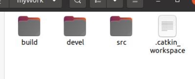
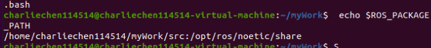
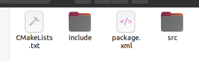
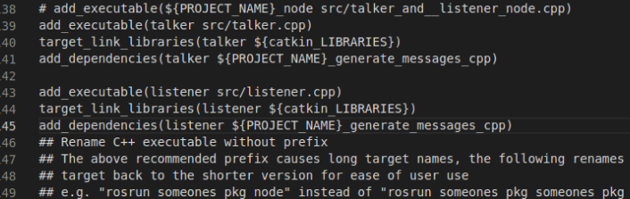
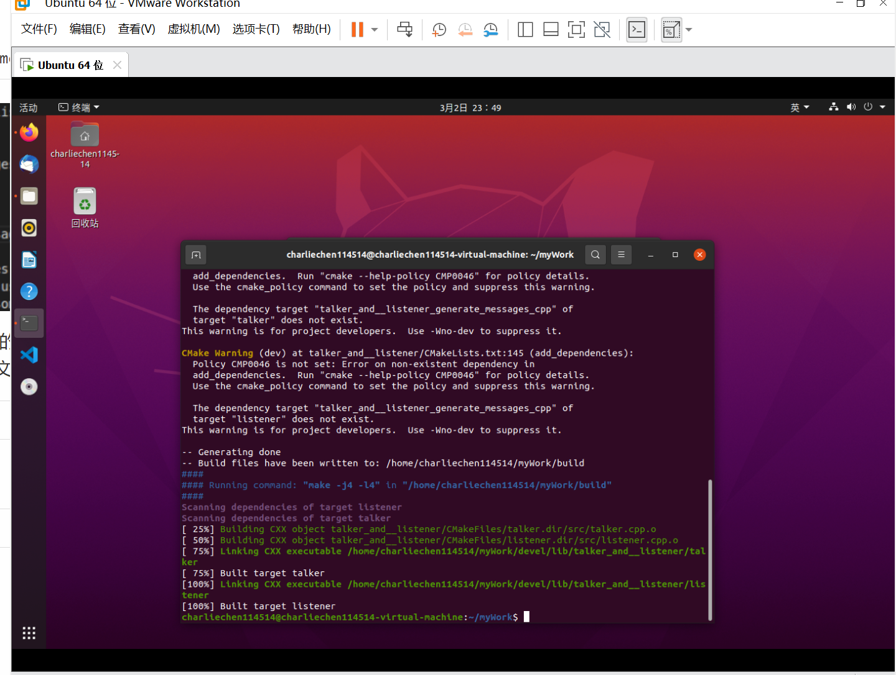
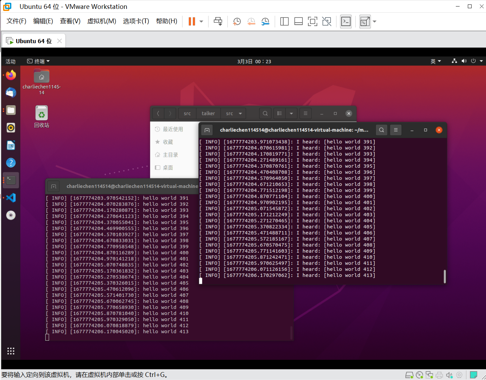

ROS 节点的创建，编程，编译与运行
ROS节点 范例
1.创建一个节点
当我们下好了 ROS 之后，可以尝试创建自己的一个节点了！但是正如同工作要有工作桌，我们创立一个工作区才能干活，于是，我们先 mkdir 一个文件夹！
mkdir ~/RosWork 以及建立一个子文件夹 src ，他就是来存我们源代码的地方
cd ~/RosWork/
mkdir src
cd ./src 不要换 src 名字！！！
下面向电脑宣称这地方归 ROS 管：
catkin_init_workspace 先返回上一级文件夹
cd .. 先编译一次环境：
catkin_make 从而产生工作文件！我们多了很多文件夹：

下一步，就是设置一下环境变量，让电脑和ROS知道你的办公桌子在哪里：
source devel/setup.bash 不放心？想看看地方对没对？用这个指令：
echo $ROS_PACKAGE_PATH
这下工作桌修好了！
开始向里面塞东西
下面向节点里面塞东西：
下面创建一个 package 包（节点下属的一个功能包）
cd ./src
catkin_create_pkg talkerAndListener std_msgs rospy roscpp 后边包含了在编译时需要依赖的其他功能包：ROS 的标准消息结构（int、bool 等）以及 C++ 和 Python 的接口。
进去 src 文件看看

我们可以开始写文件了：
为了测试，我们选用最经典的 订阅 与 接受 来尝试我们的第一次节点编写：
cd ~/你的工作区文件夹/src/talker_and__listener/src
vim listener.cpp 偷懒了，用 vim 直接编辑！
// 塞这些东西进去
// 原博客：https://blog.csdn.net/weixin_44420419/article/details/111355655
#include "ros/ros.h"
#include "std_msgs/String.h" //所要订阅的消息类型，此处是std)msgs包下的String。msg
//回调函数部分
void chatterCallback(const std_msgs::String::ConstPtr& msg)
{
ROS_INFO("I heard: [%s]", msg->data.c_str()); //将接收到的消息打印出来
}
/*subscriber的回调函数，当接收到 chatter 话题的时候就会被调用。
参数是所接收的消息的常数指标（const pkg_name::msg_name::ConstPtr& msg）.
消息是以 boost shared_ptr 指针的形式传输，这就意味着你可以存储它而又不需要复制数据。
之后使用msg->field_name即可存取message的资料
*/
int main(int argc, char **argv){
ros::init(argc, argv, "listener"); //初始化ROS节点
ros::NodeHandle n; //创建句柄节点
ros::Subscriber sub = n.subscribe("chatter", 1000, chatterCallback);
/*告诉 master 要订阅 chatter 话题（第一个参数）上的消息。
当有消息发布到这个话题时，ROS 就会调用 chatterCallback() 函数（第三个参数）。
第二个参数是队列大小，当缓存达到 1000 条消息后，自动舍弃时间戳最早的消息。
NodeHandle::subscribe() 返回 ros::Subscriber 对象,此处为sub。
当这个对象销毁时，它将自动退订 chatter 话题的消息。
有各种不同的 NodeHandle::subscribe() 函数，可以指定类的成员函数，甚至是 Boost.Function 对象可以调用的任何数据类型。
*/
ros::spin();
/*ros::spin() 进入自循环，可以尽可能快的调用消息回调函数，会调用主程序中所有回调函数，此处只有chatterCallback()
一旦 ros::ok() 返回 false，ros::spin() 就会立刻跳出自循环。
这有可能是 ros::shutdown() 被调用，或者是用户按下了 Ctrl-C，使得 master 告诉节点要终止运行。
*/
return 0;
} 现在：摁 esc 输入 :wq 退出编辑和 vim ，随后再整一个 talker.cpp
vim talker.cpp//头文件部分
#include <sstream>
#include "ros/ros.h"
/*"ros/ros.h 是一个实用的头文件，它引用了 ROS 系统中大部分常用的头文件。"
地址在 /opt/ros/noetic/include/ros/" */
#include "std_msgs/String.h"
/* "std_msgs"是一个消息类型依赖包，此处要传输string类型数据，
需要包含该数据类型的头文件String.h，就在这个依赖包里 */
//初始化部分
int main(int argc, char **argv)
{
ros::init(argc, argv, "talker");
/* ROS节点初始化。初始化的init函数包含三个参数，
前两个参数是命令行或launch文件输入的参数，可以用来命名重映射等功能；
第三个参数定义了Publisher节点的名称“talker”，不允许重复，是一个base name。 */
ros::NodeHandle n;
/* 为这个进程的节点创建一个句柄。
第一个创建的 NodeHandle 会为节点进行初始化，
最后一个销毁的 NodeHandle 则会释放该节点所占用的所有资源。 */
ros::Publisher chatter_pub = n.advertise<std_msgs::String>("chatter", 1000);
/* 告诉 master 将要在 chatter（话题名）上发布 std_msgs/String 消息类型的消息。
这样 master 就会告诉所有订阅了 chatter 话题的节点，将要有数据发布。
NodeHandle::advertise() 会建立一个topic。在ROS Master端注册一个Publisher，
返回一个 ros::Publisher 对象,此处为chatter_pub，,它有两个作用：
1) 它有一个 publish()函数可以在topic上发布(pubish)消息；
2) <std_msgs::String>指定后面要发布的消息类型是std_msgs包中的string类型，如果消息类型不对,它会拒绝发布。
("chatter", 1000)中两个参数，第一个参数指定以"chatter"为话题发布消息
第二个参数是发布序列的大小。如果发布的消息的频率太高，缓冲区中的消息在大于 1000 个的时候就会开始丢弃先前发布的消息。*/
ros::Rate loop_rate(10);
/* ros::Rate 对象可以允许你指定自循环的频率。它会追踪记录自上一次调用 Rate::sleep() 后时间的流逝，并休眠直到一个频率周期的时间。在这个例子中，让它以 10Hz 的频率运行，即节点休眠时间为100ms。 */
//循环部分
int count = 0;
while (ros::ok())
{
/*进入节点的主循环，如果下列条件之一发生，ros::ok() 返回false，跳出循环：
·SIGINT 被触发 (Ctrl+C)：roscpp 会默认生成一个 SIGINT 句柄，它负责·处理 Ctrl+C 键盘操作使ros::ok() 返回 false
·被另一同名节点踢出 ROS 网络
·关闭函数ros::shutdown() 被程序的另一部分调用
·节点中的所有 ros::NodeHandles 都已经被销毁
一旦 ros::ok() 返回 false, 所有的 ROS 调用都会失效。
*/
std_msgs::String msg;//建立暂存区，先将消息放入，在进行publish
std::stringstream ss;
ss << "hello world " << count;
msg.data = ss.str();//将要输出的字符串消息存储到string消息类型中唯一成员data中
ROS_INFO("%s", msg.data.c_str()); //类似C/C++的 printf/cout 等函数，打印日志信息。
chatter_pub.publish(msg);//发布封装完毕的消息msg。Master会查找订阅该话题的节点，并完成两个节点的连接，传输消息
ros::spinOnce();//处理订阅话题的所有回调函数callback()，
loop_rate.sleep(); //休眠，休眠时间由loop_rate()设定
++count;
}
return 0;
} 打开你的 CMakeLists.txt ，随后找到（这里推介使用VScode 的搜索，嘎嘎快）
留意到这里：
add_executable() 这是用于设置需要编译的代码和生成的可执行文件。第一个参数为期望生成的可执行文件的名称，后边的参数为参与编译的源码文件（cpp），如果需要多个代码文件，则可
在后面依次列出，中间用空格进行分隔。
和：
target_link_libraries 用于设置链接库。很多功能需要使用系统或者第三方的库函数，通过该选项可以配置
执行文件链接的库文件，第一个参数是可执行文件的名称，后面依次列出需要链接的
库。此处编译没有使用其他库，添加默认链接库${catkin_LIBRARIES}即可。
以及
add_dependencies 用于设置依赖。在很多应用中，我们需要定义语言无关的消息类型，消息类型会在编
译过程中产生相应语言的代码，如果编译的可执行文件依赖这些动态生成的代码，则
需要使用add_dependencies添加${PROJECT_NAME}_generate_messages_cpp
配置，即该功能包动态产生的消息代码。该编译规则也可以添加其他需要依赖的功能包。
下面我们设置一下：
include_directories(include ${catkin_INCLUDE_DIRS})
add_executable(talker src/talker.cpp)
target_link_libraries(talker ${catkin_LIBRARIES})
add_dependencies(talker ${PROJECT_NAME}_generate_messages_cpp)
add_executable(listener src/listener.cpp)
target_link_libraries(listener ${catkin_LIBRARIES})
add_dependencies(listener ${PROJECT_NAME}_generate_messages_cpp)
现在注意，现在注意！我们的Cmake 的版本要求的是过高的，需要调整最低版本，否则在之后的文件编译中是会爆出找不到文件的迷惑错误！看到文件的第一行
cmake_minimum_required(VERSION 3.0.2) 改成：
cmake_minimum_required(VERSION 2.8.3) 编译一下

成功了。
为了运行，还是要设置环境变量：
cd ~/<workspace name>
source ./devel/setup.bash 想偷懒的话
$ echo "source ~/ros/tr3_6/devel/setup.bash" >> ~/.bashrc
$ source ~/.bashrc 启动 ROS:
roscore 开一个新终端：运行我们的包
rosrun talkerAndlistener talker 再来一个：
rosrun talkerAndlistener listener
下班！